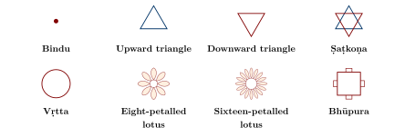
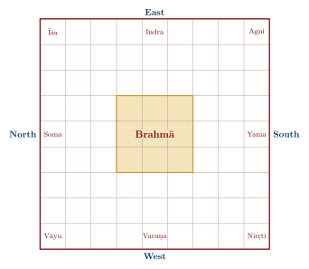

Chapter 8: Yantra and Maṇḍala¶
8.1 Introduction¶
If the mantra is the deity’s form in sound, the yantra and the maṇḍala are its form in space. Tantric worship takes place not only before an image but in and upon diagrams: drawn in coloured powders for initiation, engraved on metal plates for daily worship, laid out as the ground plan of a temple, or visualised in meditation (Bühnemann 2003; Khanna 2003).
The word yantra derives from the root yam, “to hold, restrain”, with the instrumental suffix -tra; it means any device or instrument, and in Tantric usage a diagram that “holds” the deity and the worshipper’s mind. Maṇḍala means “circle” or “disc”, and by extension a circular or square diagram in which a deity and its retinue are arranged around a centre. The two terms overlap; in general maṇḍala is used for larger, often temporary diagrams in which a whole pantheon is installed (especially for initiation), and yantra for smaller, usually permanent diagrams of a single deity, often inscribed with its mantras (Bühnemann 2003).
8.2 Geometric Elements¶
Yantras are built from a small repertoire of elements, to which the commentators assign symbolic meanings (Table 8.1 and Figure 8.1).
| Element | Sanskrit | Usual interpretation |
|---|---|---|
| Point | Bindu | The source; undifferentiated consciousness; the deity’s seat |
| Triangle, apex up | Trikoṇa | Śiva; fire |
| Triangle, apex down | Trikoṇa | Śakti; the yoni |
| Hexagram | Ṣaṭkoṇa | Union of Śiva and Śakti |
| Circle | Vṛtta | Completeness; the cosmos |
| Lotus petals | Padma, dala | Unfolding; seats for attendant deities |
| Square with gates | Bhūpura | The earth; the enclosure separating sacred from profane space |

8.3 The Śrīcakra¶
The Śrīcakra or Śrīyantra, the diagram of Tripurasundarī, is described in Chapter 5, together with its nine enclosures. It may be made in three forms: flat (bhūpṛṣṭha); slightly raised like the back of a tortoise (kūrmapṛṣṭha); and as a stepped, mountain-like solid (merupṛṣṭha, Figure 5.3). The difficulty of drawing it exactly is discussed in Section 5.3.
8.4 Other Yantras¶
Every deity has its own yantra, typically combining a central figure (triangle, hexagram, pentagon or circle) with lotus petals and a square enclosure, inscribed with the deity’s seed syllable and mantras. Forms vary between texts and lineages (Figure 8.2 and Table 8.2). A popular modern category is devoted to the nine “planets” (navagrahas) of Indian astrology, often in the form of magic squares of numbers, used to propitiate planets believed to be causing misfortune; these belong to popular astrology rather than to the classical Āgamas.
| Yantra | Deity | Typical features |
|---|---|---|
| Śrīcakra | Tripurasundarī | Nine interlocking triangles; two lotuses; square enclosure |
| Gaṇeśa yantra | Gaṇeśa | Often a hexagram or triangle with lotus |
| Kālī yantra | Kālī | Nested downward triangles within a lotus |
| Durgā yantra | Durgā | Triangle or hexagram, lotus and enclosure |
| Sudarśana yantra | Sudarśana (Viṣṇu’s discus) | Hexagram within many-spoked wheel; Pāñcarātra |
| Mahāmṛtyuñjaya yantra | Śiva as conqueror of death | Inscribed with the Mahāmṛtyuñjaya mantra (ṚV 7.59.12) |
Yantras, like mantras and amulets, are objects of devotion, and the claims made for them in the texts are claims about ritual efficacy. Many are now sold with promises that they cure disease or avert misfortune; such promises belong to the modern market rather than to the classical sources.
8.5 Maṇḍalas¶
Maṇḍalas tend to be larger and more complex than yantras; they are often drawn for a particular rite, especially initiation and consecration, and then dismantled; and they map a deity’s entire retinue and realm. In Śaiva initiation the candidate, blindfolded, casts a flower onto the maṇḍala, and the deity on which it falls determines his initiatory name.
8.5.1 The Vāstupuruṣa Maṇḍala¶
The vāstupuruṣamaṇḍala is the diagram underlying the plan of temples and houses. It represents the “Person of the Site” lying face down within a square grid, his body pinned down by the deities who occupy its squares, with Brahmā at the centre (Figure 8.3). The texts on architecture describe a series of grids from one square (sakala) up to 1,024 (Table 8.3); temple plans most often use the 64-square (maṇḍūka) or 81-square (paramaśāyika) forms (Kramrisch 1946).

| Name | Grid | Squares | Remarks |
|---|---|---|---|
| Sakala | 1\(\times\)1 | 1 | Simplest; used in some rites |
| Pecaka | 2\(\times\)2 | 4 | |
| Pīṭha | 3\(\times\)3 | 9 | |
| Mahāpīṭha | 4\(\times\)4 | 16 | |
| Maṇḍūka | 8\(\times\)8 | 64 | Common for temples |
| Paramaśāyika | 9\(\times\)9 | 81 | Common for temples and houses |
Stella Kramrisch’s classic study showed how the Hindu temple is conceived as a three-dimensional elaboration of this diagram, with the sanctum over the centre of Brahmā and the superstructure rising as an image of the cosmic mountain (Kramrisch 1946). In this sense the temple is a maṇḍala in stone (Chapter 11).
8.5.2 Śaiva and Śākta Maṇḍalas¶
The Śaiva scriptures prescribe maṇḍalas, drawn with coloured powders, for initiation: for example a central lotus for Śiva surrounded by enclosures for his attendant powers, the Vidyeśvaras, the guardians of the directions and their weapons. The Trika of Kashmir worshipped its three goddesses on the three prongs of a great trident rising from a lotus, the “trident-and-lotus maṇḍala” (triśūlābjamaṇḍala), whose structure expresses the identity of the goddesses with the powers of consciousness (Sanderson 1988). In Śrīvidyā the Śrīcakra functions as both yantra and maṇḍala.
8.5.3 Buddhist Maṇḍalas¶
Buddhist Tantra developed the maṇḍala to an extraordinary degree, especially in Tibet (Chapter 10). A Buddhist maṇḍala depicts the celestial palace of a central deity, with walls, gates and directional deities, in symbolic colours; it may be painted, made of coloured sand and ritually dismantled, built in three dimensions, or visualised. Entry into the maṇḍala is the core of Buddhist initiation (abhiṣeka).
8.5.4 The Scale of Buddhist Maṇḍalas¶
Buddhist maṇḍalas vary enormously in size. The Hevajra maṇḍala in its basic form has nine deities: Hevajra and Nairātmyā at the centre with eight yoginīs around them. The Ārya tradition of the Guhyasamāja worships a maṇḍala of thirty-two deities centred on Akṣobhyavajra; the Cakrasaṃvara maṇḍala includes concentric wheels of ḍākas and ḍākinīs associated with sacred sites; and the Kālacakra maṇḍala, with its several palaces of body, speech and mind, is traditionally said to contain over seven hundred deities. Such maṇḍalas are at once maps of a pantheon, of the cosmos and of the practitioner’s own body and mind.
8.6 Worshipping a Yantra¶
The worship of a yantra follows the general pattern of Tantric worship (Section 9.3). The diagram is first consecrated (pratiṣṭhā), with the ritual of “installing the life-breaths” (prāṇapratiṣṭhā) by which it becomes a seat of the deity. The deity is then invoked into it, mantras are placed on its parts, offerings are made to the deity and to the attendant deities of each enclosure, and the worshipper recites and meditates; a temporary diagram is finally dismantled after the deity has been dismissed (visarjana).
Permanent yantras are made of gold, silver or copper plates, or of stone or crystal; temporary ones are drawn on the ground with coloured powders or rice flour, or on birch bark, cloth or paper. Their consecration includes bathing with the “five nectars” (milk, curd, ghee, honey and sugar), offerings of sandal paste and flowers, and the installation of the life-breaths.
8.7 The Bindu¶
The point (bindu) at the centre of a yantra is geometrically dimensionless, yet in Tantric theology it is the most important element: the concentrated totality of consciousness from which the whole diagram unfolds and into which worship returns. In Śrīvidyā, Puṇyānanda’s Kāmakalāvilāsa describes a triad of bindus — white, red and mixed — forming a subtle triangle, interpreted as Śiva, Śakti and their union, and as the source of the three sections of the goddess’s mantra.
8.8 Yantra and Maṇḍala as Maps¶
A yantra functions as a map at several levels at once. It maps the cosmos, from the undifferentiated centre through successive enclosures to the manifest world at the square boundary; the deity’s realm, with its palace, attendants and powers; the body, whose cakras and parts correspond to its enclosures, as in the Bhāvanā Upaniṣad; and the ritual, of which it is the ground plan.
Meditation on a yantra traditionally proceeds from gazing at the external diagram, through visualising it internally, to an identification of the meditator with the diagram and the deity, in which the form itself is finally transcended.
8.9 Maṇḍalas and Yantras in Southeast Asia¶
Indian ritual diagrams travelled with Śaiva and Buddhist Tantra to Southeast Asia, where they took local forms. In Java the Śaiva temple complex of Prambanan (9th century), with its concentric courts of shrines, and the Buddhist Borobudur have both been read as three-dimensional maṇḍalas, though the interpretation of Borobudur is debated (Section 10.14.2). In Bali, where Śaiva priestly ritual survives, magical diagrams (rerajahan) are drawn on cloth or palm leaf for protection and healing. In Thailand, Cambodia, Laos and Myanmar, diagrams called yan (from yantra), including protective tattoos (sak yan), are used in a Buddhist setting; and the royal Śaiva temples of Cambodia and Champa are documented in Sanskrit inscriptions (Section 12.9).